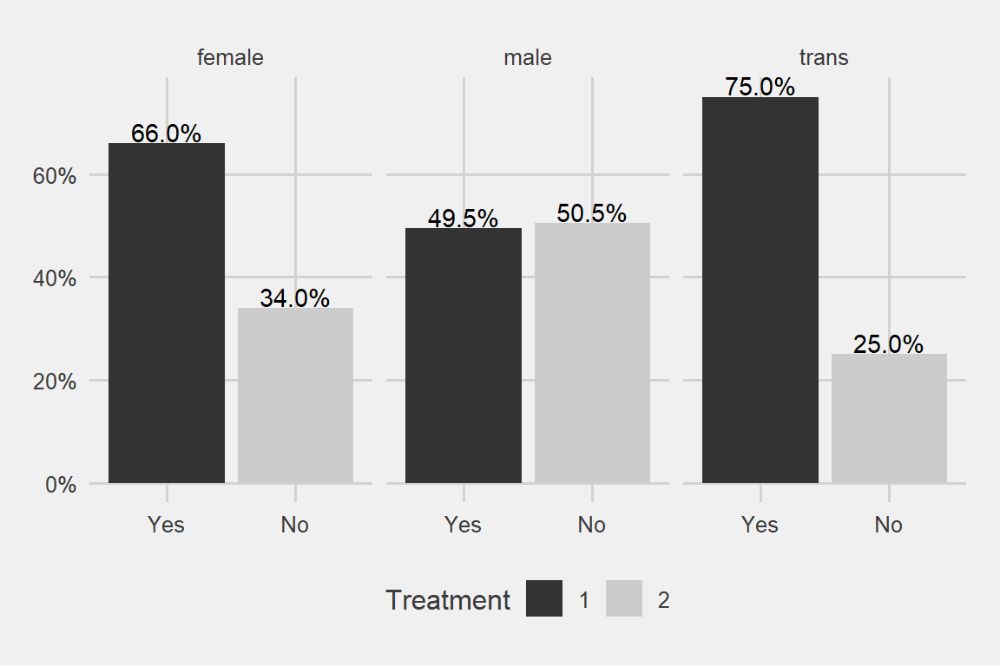
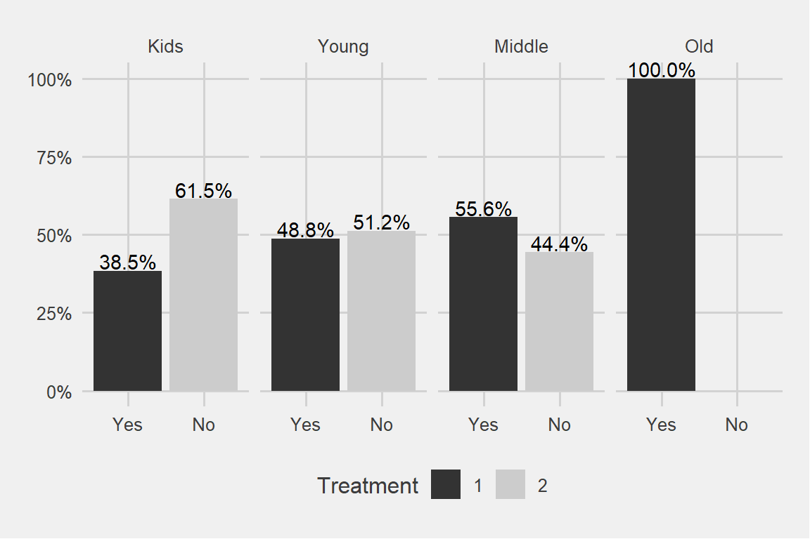
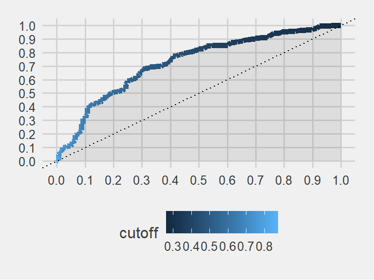
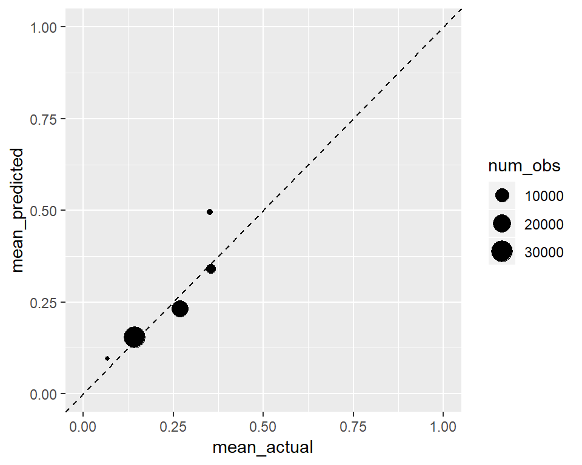

Can we do better than a Dart Throwing Chimpanzee? It is said by the experts that a dart throwing chimp can hit the target 60% of the time!
In this task we are going to predict mental illness for workers in the tech sector. The data comes from Kaggle. The variable to predict is ‘treatment’.
library(ggplot2)
library(data.table)
library(caret)
library(glmnet)
library(ROCR)
library(dplyr)
library(ggthemes)
knitr::opts_chunk$set(warning = FALSE)
knitr::opts_chunk$set(message = FALSE)data <- fread("data/mentaldata/survey_cleaned.csv")
data <- data[ ,c("comments", "state","work_interfere") := NULL]
data[, age := as.numeric(age)]
data[ , treatment := factor(treatment, levels = c("Yes", "No"))]Explore some predictors that can be used to predict treatment
names(data)## [1] "Timestamp" "age"
## [3] "gender" "country"
## [5] "self_employed" "family_history"
## [7] "treatment" "no_employees"
## [9] "remote_work" "tech_company"
## [11] "benefits" "care_options"
## [13] "wellness_program" "seek_help"
## [15] "anonymity" "leave"
## [17] "mental_health_consequence" "phys_health_consequence"
## [19] "coworkers" "supervisor"
## [21] "mental_health_interview" "phys_health_interview"
## [23] "mental_vs_physical" "obs_consequence"glimpse(data)## Observations: 1,256
## Variables: 24
## $ Timestamp <chr> "2014-08-27 11:29:31", "2014-08-27 1...
## $ age <dbl> 37, 44, 32, 31, 31, 33, 35, 39, 42, ...
## $ gender <chr> "male", "male", "male", "male", "mal...
## $ country <chr> "United States", "United States", "C...
## $ self_employed <chr> "", "", "", "", "", "", "", "", "", ...
## $ family_history <chr> "No", "No", "No", "Yes", "No", "Yes"...
## $ treatment <fct> Yes, No, No, Yes, No, No, Yes, No, Y...
## $ no_employees <chr> "6-25", "More than 1000", "6-25", "2...
## $ remote_work <chr> "No", "No", "No", "No", "Yes", "No",...
## $ tech_company <chr> "Yes", "No", "Yes", "Yes", "Yes", "Y...
## $ benefits <chr> "Yes", "Don't know", "No", "No", "Ye...
## $ care_options <chr> "Not sure", "No", "No", "Yes", "No",...
## $ wellness_program <chr> "No", "Don't know", "No", "No", "Don...
## $ seek_help <chr> "Yes", "Don't know", "No", "No", "Do...
## $ anonymity <chr> "Yes", "Don't know", "Don't know", "...
## $ leave <chr> "Somewhat easy", "Don't know", "Some...
## $ mental_health_consequence <chr> "No", "Maybe", "No", "Yes", "No", "N...
## $ phys_health_consequence <chr> "No", "No", "No", "Yes", "No", "No",...
## $ coworkers <chr> "Some of them", "No", "Yes", "Some o...
## $ supervisor <chr> "Yes", "No", "Yes", "No", "Yes", "Ye...
## $ mental_health_interview <chr> "No", "No", "Yes", "Maybe", "Yes", "...
## $ phys_health_interview <chr> "Maybe", "No", "Yes", "Maybe", "Yes"...
## $ mental_vs_physical <chr> "Yes", "Don't know", "No", "No", "Do...
## $ obs_consequence <chr> "No", "No", "No", "Yes", "No", "No",...sapply(data, function(x) sum(is.na(x)))## Timestamp age
## 0 0
## gender country
## 0 0
## self_employed family_history
## 0 0
## treatment no_employees
## 0 0
## remote_work tech_company
## 0 0
## benefits care_options
## 0 0
## wellness_program seek_help
## 0 0
## anonymity leave
## 0 0
## mental_health_consequence phys_health_consequence
## 0 0
## coworkers supervisor
## 0 0
## mental_health_interview phys_health_interview
## 0 0
## mental_vs_physical obs_consequence
## 0 0data$gender %>% unique()## [1] "male" "trans" "female"data[, age_cat := cut(age, .(-Inf,20,35,65,Inf), labels = c('Kids','Young','Middle','Old'))]ggplot(data, aes(age_cat)) + geom_bar() + facet_grid(~gender) + theme_economist_white()This data is mostly about young males which is representative for the tech industry. But which one is seeking relatively more treatment? Males or females?
ggplot(data, aes(x = treatment, group = gender)) +
geom_bar(aes(y = ..prop.., fill = factor(..x..)), stat="count") +
geom_text(aes( label = scales::percent(..prop..),
y= ..prop.. ), stat= "count", vjust = -.1) +
scale_y_continuous(labels=scales::percent) +
facet_grid(~gender) +
labs(y = "Percent", fill="Treatment") +
theme_fivethirtyeight() + scale_fill_grey()
I said males or females and the trans gender came out with a surprise
How about family history?
ggplot(data, aes(x = treatment, group = family_history)) +
geom_bar(aes(y = ..prop.., fill = factor(..x..)), stat="count") +
geom_text(aes( label = scales::percent(..prop..),
y= ..prop.. ), stat= "count", vjust = -.1) +
scale_y_continuous(labels=scales::percent) +
facet_grid(~family_history) +
labs(y = "Percent", fill="Treatment") +
theme_fivethirtyeight() + scale_fill_grey()Family really matters a big deal!
ggplot(data, aes(x = treatment, group = age_cat)) +
geom_bar(aes(y = ..prop.., fill = factor(..x..)), stat="count") +
geom_text(aes( label = scales::percent(..prop..),
y= ..prop.. ), stat= "count", vjust = -.1) +
scale_y_continuous(labels=scales::percent) +
facet_grid(~age_cat) +
labs(y = "Percent", fill="Treatment") +
theme_fivethirtyeight() + scale_fill_grey()
We can see a pattern here. Older the age category, more the treatment. Similarly younger age categories are seeking less and less treatment.
Why do I have 100% in the oldest age category?
data %>% filter(age > 65) %>% select(age_cat, gender, family_history, treatment)## age_cat gender family_history treatment
## 1 Old male No Yes
## 2 Old trans Yes Yes
## 3 Old male Yes YesIt turns out there are only 3 observations over there. As we have seen above the dominant age category is 20-35 years old.
ggplot(data, aes(x = treatment, group = seek_help)) +
geom_bar(aes(y = ..prop.., fill = factor(..x..)), stat="count") +
geom_text(aes( label = scales::percent(..prop..),
y= ..prop.. ), stat= "count", vjust = -.1) +
labs(y = "Percent", fill="treatment") +
facet_grid(~seek_help) +
scale_y_continuous(labels = scales::percent) +
theme_fivethirtyeight() + scale_fill_grey()There can be some evidence for the higher probability of ending up in a treatment for the people who are aware of their employer’s services regarding mental issues
ggplot(data, aes(x = treatment, group = leave)) +
geom_bar(aes(y = ..prop.., fill = factor(..x..)), stat="count") +
geom_text(aes( label = scales::percent(..prop..),
y= ..prop.. ), stat= "count", vjust = -.2) +
labs(y = "Percent", fill="treatment") +
facet_grid(~leave) +
scale_y_continuous(labels = scales::percent) +
theme_fivethirtyeight() + scale_fill_grey()People who indicate that there is some difficulty on getting a leave for mental issue reasons might giving us signal.
Partitioning the data to 70% training and 30% test samples.
set.seed(123)
my_ratio <- 0.7
train_indices <- createDataPartition(y = data[["treatment"]],
times = 1,
p = my_ratio,
list = FALSE)
data_train <- data[train_indices, ]
data_test <- data[-train_indices, ]Build models with glmnet and rpart that predict the binary outcome of treatment. Using cross-validation on the training set and AUC as a selection measure.
train_control <- trainControl(method = "cv",
number = 5,
classProbs = TRUE,
summaryFunction = twoClassSummary)
tune_grid <- expand.grid("alpha" = c(0, 1),
"lambda" = seq(0.1, 0.14, 0.01))
set.seed(123)
glmnet_model <- train(treatment ~ age_cat + seek_help + benefits + supervisor +
family_history + leave + gender,
data = data_train,
method = "glmnet",
preProcess = c("center", "scale"),
trControl = train_control,
tuneGrid = tune_grid,
metric = "ROC")
glmnet_model## glmnet
##
## 880 samples
## 7 predictor
## 2 classes: 'Yes', 'No'
##
## Pre-processing: centered (16), scaled (16)
## Resampling: Cross-Validated (5 fold)
## Summary of sample sizes: 704, 705, 704, 703, 704
## Resampling results across tuning parameters:
##
## alpha lambda ROC Sens Spec
## 0 0.10 0.7448183 0.6576864 0.7178422
## 0 0.11 0.7452348 0.6576864 0.7178422
## 0 0.12 0.7452360 0.6576864 0.7178422
## 0 0.13 0.7454450 0.6554392 0.7155434
## 0 0.14 0.7453153 0.6531920 0.7132706
## 1 0.10 0.6904544 0.5540347 0.8049634
## 1 0.11 0.6840193 0.5540347 0.8049634
## 1 0.12 0.6794991 0.5540347 0.8049634
## 1 0.13 0.6794991 0.5540347 0.8049634
## 1 0.14 0.6794991 0.5540347 0.8049634
##
## ROC was used to select the optimal model using the largest value.
## The final values used for the model were alpha = 0 and lambda = 0.13.trctrl <- trainControl(method = "cv",
number = 5,
classProbs = T,
#verboseIter = T,
summaryFunction = twoClassSummary)
tune_grid <- data.frame(cp=seq(0.0001, 0.01, 0.001))
set.seed(123)
treeCPModel <- train(treatment ~ age_cat + seek_help + benefits + supervisor +
family_history + leave + gender,
data = data_train,
method = "rpart",
trControl = trctrl,
preProcess = c("center", "scale"),
tuneGrid = tune_grid,
metric = 'ROC')
treeCPModel## CART
##
## 880 samples
## 7 predictor
## 2 classes: 'Yes', 'No'
##
## Pre-processing: centered (16), scaled (16)
## Resampling: Cross-Validated (5 fold)
## Summary of sample sizes: 704, 705, 704, 703, 704
## Resampling results across tuning parameters:
##
## cp ROC Sens Spec
## 0.0001 0.7156373 0.6800817 0.6422936
## 0.0011 0.7139538 0.6935904 0.6376959
## 0.0021 0.7153335 0.6936415 0.6491641
## 0.0031 0.7194024 0.7072268 0.6422675
## 0.0041 0.7194024 0.7072268 0.6422675
## 0.0051 0.7191620 0.6734168 0.7039446
## 0.0061 0.7193958 0.6688968 0.7085162
## 0.0071 0.7193958 0.6688968 0.7085162
## 0.0081 0.7193958 0.6688968 0.7085162
## 0.0091 0.7051818 0.6281920 0.7268548
##
## ROC was used to select the optimal model using the largest value.
## The final value used for the model was cp = 0.0041.Now, compare models based on their predictive performance based on the cross-validation information. We can just use the mean AUC to select the best model.
Now evaluating the better performing model on the test set, drawing a ROC curve and interpreting the AUC.
test_prediction <- predict.train(glmnet_model, newdata = data_test)
test_truth <- data_test[["treatment"]]There are 4 cases:
confusionMatrix(test_prediction, test_truth)## Confusion Matrix and Statistics
##
## Reference
## Prediction Yes No
## Yes 132 64
## No 58 122
##
## Accuracy : 0.6755
## 95% CI : (0.6256, 0.7226)
## No Information Rate : 0.5053
## P-Value [Acc > NIR] : 1.777e-11
##
## Kappa : 0.3508
## Mcnemar's Test P-Value : 0.6508
##
## Sensitivity : 0.6947
## Specificity : 0.6559
## Pos Pred Value : 0.6735
## Neg Pred Value : 0.6778
## Prevalence : 0.5053
## Detection Rate : 0.3511
## Detection Prevalence : 0.5213
## Balanced Accuracy : 0.6753
##
## 'Positive' Class : Yes
## The various types of errors have to be examined and we have to decide based on them.
# obtain probabilities instead of binary predictions
test_prediction_probs <- predict.train(glmnet_model,
newdata = data_test,
type = "prob")
head(test_prediction_probs)## Yes No
## 1 0.6769227 0.3230773
## 2 0.6396976 0.3603024
## 3 0.3119165 0.6880835
## 4 0.4018016 0.5981984
## 5 0.6274032 0.3725968
## 6 0.7856110 0.2143890summary(test_prediction_probs$Yes)## Min. 1st Qu. Median Mean 3rd Qu. Max.
## 0.2779 0.3640 0.5072 0.5149 0.6580 0.8601By default, predict.train uses the 50% threshold for prediction. We can try 45% also:
test_prediction_v2 <- ifelse(test_prediction_probs$Yes > 0.45, "Yes", "No")
test_prediction_v2 <- factor(test_prediction_v2, levels = c("Yes", "No"))
confusionMatrix(test_prediction_v2, test_truth)## Confusion Matrix and Statistics
##
## Reference
## Prediction Yes No
## Yes 150 82
## No 40 104
##
## Accuracy : 0.6755
## 95% CI : (0.6256, 0.7226)
## No Information Rate : 0.5053
## P-Value [Acc > NIR] : 1.777e-11
##
## Kappa : 0.3494
## Mcnemar's Test P-Value : 0.0002057
##
## Sensitivity : 0.7895
## Specificity : 0.5591
## Pos Pred Value : 0.6466
## Neg Pred Value : 0.7222
## Prevalence : 0.5053
## Detection Rate : 0.3989
## Detection Prevalence : 0.6170
## Balanced Accuracy : 0.6743
##
## 'Positive' Class : Yes
## We lowered our false negatives a bit by using the threshold of 0.45 above. Lets do a search for threshold.
If we increase the threshold for predicting something to be positive: we will have less and less cases that we label as positive. Both of those that are positive in reality and of those that are negative. Thus, both the true positives and the false positives increase.
thresholds <- seq(0.3, 0.6, by = 0.05)
for (thr in thresholds) {
test_prediction <- ifelse(test_prediction_probs$Yes > thr, "Yes", "No")
test_prediction <- factor(test_prediction, levels = c("Yes", "No"))
print(paste("Threshold:", thr))
print(confusionMatrix(test_prediction, test_truth)[["table"]])
} ## [1] "Threshold: 0.3"
## Reference
## Prediction Yes No
## Yes 189 172
## No 1 14
## [1] "Threshold: 0.35"
## Reference
## Prediction Yes No
## Yes 170 125
## No 20 61
## [1] "Threshold: 0.4"
## Reference
## Prediction Yes No
## Yes 161 98
## No 29 88
## [1] "Threshold: 0.45"
## Reference
## Prediction Yes No
## Yes 150 82
## No 40 104
## [1] "Threshold: 0.5"
## Reference
## Prediction Yes No
## Yes 132 64
## No 58 122
## [1] "Threshold: 0.55"
## Reference
## Prediction Yes No
## Yes 109 46
## No 81 140
## [1] "Threshold: 0.6"
## Reference
## Prediction Yes No
## Yes 89 33
## No 101 153What to choose then? I would choose .45 threshold because it is a balanced point for my business objectives.
My strategy is to minimize the situations where I predict no-treatment but in reality it is a yes. In those cases I do a terrible mistake. The outcome has a high cost for the company. I am not aware of the troubled people around. It is like sitting on a time bomb which we dont know it exists.
However, I cant lower my threshold too much also. In that case I would do too many false positives which has other kind of costs. It will impact the time and productivity negatively.
On the other hand, we can accept False Positives until to a centain extend. There is a sweet spot where they are not much costly compared to False Negatives. Just like some false fire alarms will not cause a lot of trouble.
After some scientific meditation, 0.45 will be the threshold I would use.
At 0.45 Threshold Point I have:
82 False Posities and 40 False Negatives.
The ROC curve summarizes how a binary classifier performs “overall”, taking into accounts all possible thresholds. It shows the trade-off between true positive rate (a.k.a sensitivity, # true positives / # all positives) and the false positive rate (a.k.a 1 - specificity, # false positive / # negatives).
# a ggplot
# using prediction function from ROCR package
glmnet_prediction <- prediction(test_prediction_probs$Yes,
data_test[["treatment"]])
glmnet_perf <- performance(glmnet_prediction, measure = "tpr", x.measure = "fpr")
glmnet_roc_df <- data.table(
model = "glm",
FPR = glmnet_perf@x.values[[1]],
TPR = glmnet_perf@y.values[[1]],
cutoff = glmnet_perf@alpha.values[[1]]
)
ggplot(glmnet_roc_df) +
geom_line(aes(FPR, TPR, color = cutoff), size = 2) +
geom_ribbon(aes(FPR, ymin = 0, ymax = TPR), alpha = 0.1) +
geom_abline(intercept = 0, slope = 1, linetype = "dotted", col = "black") +
scale_y_continuous(limits = c(0, 1), breaks = seq(0, 1, .1)) +
scale_x_continuous(limits = c(0, 1), breaks = seq(0, 1, .1)) +
theme_fivethirtyeight() + scale_fill_grey() 
Higher AUC generally means better classification.
# calculate AUC
AUC <- performance(glmnet_prediction, "auc")@y.values[[1]]
print(AUC)## [1] 0.7259904The colored field’s area in the plot is 0.725. A superb classifier would yield an area very close to 1. This is not one of the best models. However, it is better than flipping a coin. Or, it is better than a dart throwing chimpanzee
This data is about patients taking an appointment from the doctors. They are labeled as ‘no-show’ when they have an appointment but never showed up. We will first predict this no-show behaviour and then do some calibration.
# https://www.kaggle.com/joniarroba/noshowappointments
data <- fread("data/noshowdata/no-show-data.csv")
glimpse(data)## Observations: 110,527
## Variables: 14
## $ PatientId <dbl> 2.987250e+13, 5.589978e+14, 4.262962e+12, 8.679...
## $ AppointmentID <int> 5642903, 5642503, 5642549, 5642828, 5642494, 56...
## $ Gender <chr> "F", "M", "F", "F", "F", "F", "F", "F", "F", "F...
## $ ScheduledDay <chr> "2016-04-29T18:38:08Z", "2016-04-29T16:08:27Z",...
## $ AppointmentDay <chr> "2016-04-29T00:00:00Z", "2016-04-29T00:00:00Z",...
## $ Age <int> 62, 56, 62, 8, 56, 76, 23, 39, 21, 19, 30, 29, ...
## $ Neighbourhood <chr> "JARDIM DA PENHA", "JARDIM DA PENHA", "MATA DA ...
## $ Scholarship <int> 0, 0, 0, 0, 0, 0, 0, 0, 0, 0, 0, 0, 1, 0, 0, 0,...
## $ Hipertension <int> 1, 0, 0, 0, 1, 1, 0, 0, 0, 0, 0, 0, 0, 0, 0, 0,...
## $ Diabetes <int> 0, 0, 0, 0, 1, 0, 0, 0, 0, 0, 0, 0, 0, 0, 0, 0,...
## $ Alcoholism <int> 0, 0, 0, 0, 0, 0, 0, 0, 0, 0, 0, 0, 0, 0, 0, 0,...
## $ Handcap <int> 0, 0, 0, 0, 0, 0, 0, 0, 0, 0, 0, 0, 0, 0, 0, 0,...
## $ SMS_received <int> 0, 0, 0, 0, 0, 0, 0, 0, 0, 0, 0, 1, 0, 0, 0, 1,...
## $ `No-show` <chr> "No", "No", "No", "No", "No", "No", "Yes", "Yes...# some data cleaning
data[, c("PatientId", "AppointmentID", "Neighbourhood") := NULL]
setnames(data,
c("No-show",
"Age",
"Gender",
"ScheduledDay",
"AppointmentDay",
"Scholarship",
"Hipertension",
"Diabetes",
"Alcoholism",
"Handcap",
"SMS_received"),
c("no_show",
"age",
"gender",
"scheduled_day",
"appointment_day",
"scholarship",
"hypertension",
"diabetes",
"alcoholism",
"handicap",
"sms_received"))
# clean up a little bit
data <- data[age %between% c(0, 95)]
# for binary prediction with caret, the target variable must be a factor
data[, no_show := factor(no_show, levels = c("Yes", "No"))] #first one got to be YES, the positive
data[, no_show_num := ifelse(no_show == "Yes", 1, 0)]
data[, handicap := ifelse(handicap > 0, 1, 0)]
# create new variables
data[, scheduled_day := as.Date(scheduled_day)]
data[, appointment_day := as.Date(appointment_day)]
data[, days_since_scheduled := as.integer(appointment_day - scheduled_day)]
data <- data[days_since_scheduled > -1]data[, no_show_num := NULL]
data[, days_category := cut(
days_since_scheduled,
breaks = c(-1, 0, 1, 2, 5, 10, 30, Inf),
include.lowest = TRUE)]
data[, age_category := cut(age,
breaks = seq(0, 100, by = 5),
include.lowest = TRUE)]Now create a training and a test data and estimate a simple logistic regression to predict no_show.
training_ratio <- 0.5
set.seed(1234)
train_indices <- createDataPartition(y = data[["no_show"]],
times = 1,
p = training_ratio,
list = FALSE)
data_train <- data[train_indices, ]
data_test <- data[-train_indices, ]train_control <- trainControl(method = "cv",
number = 5,
classProbs = TRUE)
set.seed(857)
glm_model <- train(no_show ~ age_category + gender + days_since_scheduled,
method = "glm",
data = data_train,
trControl = train_control)
test_prediction <- predict.train(glm_model, newdata = data_test)
test_truth <- data_test[["no_show"]]# obtain probabilities instead of binary predictions
test_prediction_probs <- predict.train(glm_model,
newdata = data_test,
type = "prob")summary(test_prediction_probs$Yes)## Min. 1st Qu. Median Mean 3rd Qu. Max.
## 0.0939 0.1479 0.1829 0.2011 0.2265 0.9542prediction <- test_prediction_probs$Yes
prediction_sqrt <- sqrt(prediction)
prediction_sq <- prediction^2rocr_prediction <- prediction(prediction, test_truth)
rocr_sqrt <- prediction(prediction_sqrt, test_truth)
rocr_sq <- prediction(prediction_sq, test_truth)
# built-in plot method
plot(performance(rocr_sqrt, "tpr", "fpr"), colorize = FALSE)
plot(performance(rocr_sq, "tpr", "fpr"), add = TRUE, colorize = FALSE)
plot(performance(rocr_prediction, "tpr", "fpr"), add = TRUE, colorize = FALSE) Area under the curves are the same for all three of them. Because it is the same model. Sensitivity and specificity have an inverse relationship. Increasing one would always decrease the other and Area Under the Curve remains the same.
# calculate AUC
AUC <- performance(rocr_prediction, "auc")@y.values[[1]]
AUC_sqrt <- performance(rocr_sqrt, "auc")@y.values[[1]]
AUC_sq <- performance(rocr_sq, "auc")@y.values[[1]]
AUC_results <- c(AUC, AUC_sqrt, AUC_sq)
AUC_results## [1] 0.6559295 0.6559295 0.6559295Can the scores produced by the model be regarded as probabilities? Let’s calculate the predicted and actual share of positive cases for groups of observations in the test set based on their predicted scores.
truth_numeric <- ifelse(test_truth == "Yes", 1, 0)
score_glm <- test_prediction_probs$Yes
summary(score_glm)## Min. 1st Qu. Median Mean 3rd Qu. Max.
## 0.0939 0.1479 0.1829 0.2011 0.2265 0.9542actual_vs_predicted <- data.table(actual = truth_numeric,
predicted = score_glm)
actual_vs_predicted[, score_category := cut(predicted,
seq(0, 0.4, 0.1),
include.lowest = TRUE)]
calibration <- actual_vs_predicted[, .(mean_actual = mean(actual),
mean_predicted = mean(predicted),
num_obs = .N),
keyby = .(score_category)]
ggplot(calibration,
aes(x = mean_actual, y = mean_predicted, size = num_obs)) +
geom_point() +
geom_abline(intercept = 0, slope = 1, linetype = "dashed") +
ylim(0, 1) + xlim(0, 1)
This one is well calibrated. Predicted mean groups are similar to the actual means. It looks like a well calibrated classifier does not mean a perfect classifier.
Below we will see the calibration when we take squre root of the predictions. In general if we are following the 45 degree line it is a good sign for calibration.
actual_vs_predicted <- data.table(actual = truth_numeric,
predicted = prediction_sqrt)
actual_vs_predicted[, score_category := cut(predicted,
seq(0, 0.4, 0.05),
include.lowest = TRUE)]
calibration <- actual_vs_predicted[, .(mean_actual = mean(actual),
mean_predicted = mean(predicted),
num_obs = .N),
keyby = .(score_category)]
ggplot(calibration,
aes(x = mean_actual, y = mean_predicted, size = num_obs)) +
geom_point() +
geom_abline(intercept = 0, slope = 1, linetype = "dashed") +
ylim(0, 1) + xlim(0, 1)Of course since we increased the values of our predictions they went up in the y axis, and the transformation was not a linear one.
We will see a similar effect below to the other direction.
actual_vs_predicted <- data.table(actual = truth_numeric,
predicted = prediction_sq)
actual_vs_predicted[, score_category := cut(predicted,
seq(0, 0.4, 0.05),
include.lowest = TRUE)]
calibration <- actual_vs_predicted[, .(mean_actual = mean(actual),
mean_predicted = mean(predicted),
num_obs = .N),
keyby = .(score_category)]
ggplot(calibration,
aes(x = mean_actual, y = mean_predicted, size = num_obs)) +
geom_point() +
geom_abline(intercept = 0, slope = 1, linetype = "dashed") +
ylim(0, 1) + xlim(0, 1)Nevertheless, even after perfect calibration of a classifier, its ROC is not affected and its classification ability remains unchanged. This is discussed in this paper in detail if you are interested: http://www.stat.wvu.edu/~jharner/courses/dsci503/docs/vuk.pdf
A good example about calibration is discussed also in Nate Silver’s book the Signal and Noise regarding weather forecasts being tweaked a bit on tv channels to predict more rain. It is called the ‘wet bias’. They want to predict more rain than the evidence suggests, not to make people angry.
Thank for surviving until here! See you in the next chapters.